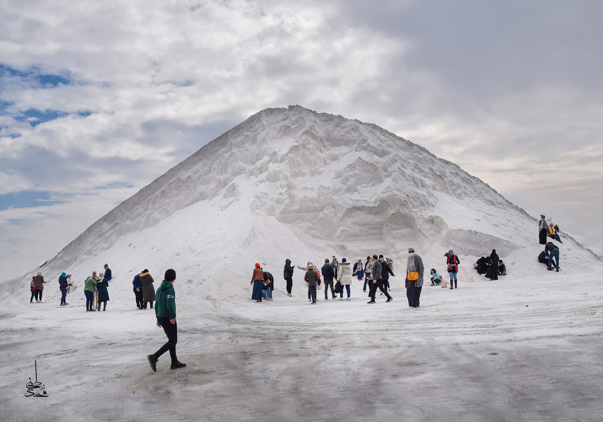

The Egyptian city of Port Said
The Egyptian city of Port Said is a coastal city called the valiant city, and it represents the administrative capital of Port Said Governorate. To the west is the city of Damietta and Dakahlia, and to the east, with an area of about 845,445 square kilometers, and a population of about 524,433 people, according to the 2010 census. It was demolished during the Crusader invasions, and in the modern era, when De Lesseps began digging the Suez Canal during the reign of Khedive Ismail in 1859, he began establishing the modern city of Port Said to supervise the northern entrance to the Suez Canal. Port Said is a compound name consisting of the word (Mina), which means port, and the word Said for the ruler of Egypt, Muhammad Said Pasha. Port Said climate The city enjoys a mild climate throughout the year. Hot, dry summers and wet winters with moderate precipitation. August is the hottest month of the year, and November is the coldest. Port Said Economy Due to the city's privileged location at the northern entrance to the Suez Canal, through which large numbers of ships pass, the city has benefited from this advantage by paying attention to container handling through the operations of unloading and loading ships, freight and transportation. communications. Warehouses, annexes and yards, he also took care of supplying ships with fuel, food and water. The city is famous for the Bambuti neighborhood, which is the merchants who board the ships that pass through the canal to sell Egyptian heritage products. In 2015, the presence of natural gas was discovered on the coast of Port Said, and it is considered the largest field in the Mediterranean region. Tourist attractions in Port Said Commonwealth Cemeteries: One of the 16 cemeteries scattered in the governorates of Egypt, the cemetery is of interest to many descendants of the victims of the First and Second World Wars to perpetuate their memory. Scientific second. Old Port Said Lighthouse: Its establishment dates back to 1859 when it was made of wood at that time, and it used to illuminate a distance of about ten miles with the aim of guiding ships passing through the Suez Canal. Khedive Ismail used concrete, and thus it is the first building to be built with concrete in Egypt and the Middle East. Designed in the shape of a gray octagon, the lighthouse was about 56 meters high. It is currently considered one of the most prominent historical and archaeological monuments of the city of Port Said. Suez Canal Authority Building: It is a palace built by Khedive Ismail on the shore of the Suez Canal to receive guests from the heads of states and kings who visited Egypt during his reign. In World War I, Britain bought the building and used it as the headquarters of its army command in the region. Gamal Abdel Nasser raised the flag of Egypt to declare the independence of Egypt. The palace is characterized by its distinctive and unique architectural style. It is currently used as the local headquarters for the Suez Canal Authority and Ship Traffic Control. Obelisk of the Martyrs: A monument in the form of a Pharaonic obelisk covered with gray granite. It was built to commemorate the martyrs of Port Said. The obelisk was erected on a pedestal topped by a searchlight, and below it is the Nasr Museum of Modern Art. El-Nasr Museum of Modern Art: It was established in 1995 to perpetuate the struggle and steadfastness of the city of Port Said and its people and to document their heroism. Port Said Military Museum: It is one of the museums of the Egyptian Armed Forces. The idea of establishing it began in 1963 with the aim of collecting remnants of the 1956 war. The “Garden of the Nile Girl” was chosen as its residence. The museum includes a hall for the Suez Canal, documents related to the project, the stages of its implementation and opening, and remnants of the October War.